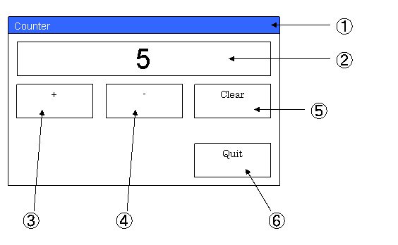
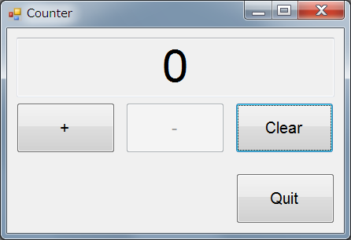

職場の若手向けお勉強テーマとして作成しました。C#(Form) で下記の機能を実現しなさい、という内容です。
カウンタ表示部と、内部変数、をデータバインディングします。
画面仕様は以下の通り。記載事項以外は自由に設計のこと。
フォント：Arial

| 項番 | 概要 | コントロール | タブオーダー | 文字列、文字種別、他 | 他 |
|---|---|---|---|---|---|
| 1 | ウィンドウ | - | - | "Counter" | Window サイズ： 800x600以内 |
| 2 | 値表示部 | TextBox | (*1) | Number, 値範囲 0～10 | フォントサイズ： 36pt センター表示 ReadOnly |
| 3 | +1 | Button | 1 | "+" | フォントサイズ： 12pt |
| 4 | -1 | Button | 2 | "-" | フォントサイズ： 12pt |
| 5 | 0 クリア | Button | 3 | "Clear" | フォントサイズ： 12pt |
| 6 | プログラム終了ボタン | Button | 0 | "Quit" | フォントサイズ： 12pt |
(*1) TabStop を False に設定
| コンパイラ : | Visual Studio 2008 | |
| 言語： | C# (Form) | |
| OS : | Windows XP Windows 7 |
|
実際に私が作成したプログラムの画面は下図の通り。

[プログラムソース (Form1.cs)]
using System;
using System.Collections.Generic;
using System.ComponentModel;
using System.Data;
using System.Drawing;
using System.Linq;
using System.Text;
using System.Windows.Forms;
using CounterDll;
[assembly: CLSCompliant(true)] // CA1014
namespace CounerForm
{
public partial class Form1 : Form
{
private Counter _counter = new Counter();
public Form1()
{
InitializeComponent();
}
private void btnQuit_Click(object sender, EventArgs e)
{
Close();
}
private void Form1_Load(object sender, EventArgs e)
{
textBox1.DataBindings.Add("Text", _counter, "CountValue");
btnClear_Click(this, new EventArgs());
}
private void btnIncrement_Click(object sender, EventArgs e)
{
_counter.Increment();
if (_counter.CountValue != _counter.CountMin)
{
btnDecrement.Enabled = true;
}
if (_counter.CountValue == _counter.CountMax)
{
btnIncrement.Enabled = false;
}
}
private void btnDecrement_Click(object sender, EventArgs e)
{
_counter.Decrement();
if (_counter.CountValue == _counter.CountMin)
{
btnDecrement.Enabled = false;
}
if (_counter.CountValue != _counter.CountMax)
{
btnIncrement.Enabled = true;
}
}
private void btnClear_Click(object sender, EventArgs e)
{
_counter.Clear();
btnIncrement.Enabled = true;
btnDecrement.Enabled = false;
}
private void Form1_FormClosing(object sender, FormClosingEventArgs e)
{
if (MessageBox.Show("プログラムを終了してよろしいですか？", "終了確認", MessageBoxButtons.YesNo, MessageBoxIcon.Question, MessageBoxDefaultButton.Button1, (MessageBoxOptions)0) == DialogResult.Yes)
{
}
else
{
e.Cancel = true;
}
}
}
}
[プログラムソース (Counter.cs)]
using System; using System.Collections.Generic; using System.Linq; using System.Text; using System.ComponentModel; // INotifyPropertyChanged [assembly: CLSCompliant(true)] // CA1014 namespace CounterDll { public class Counter : INotifyPropertyChanged { private int _countValue ; public int CountValue { get { return _countValue; } set { _countValue = value; NotifyPropertyChanged("CountValue"); } } private readonly int _CountMax = 10; public int CountMax { get { return _CountMax; } } private readonly int _CountMin = 0; // CS0649 対応版 ; FxCopの指摘 CA1805 が残るが、まぁ特に問題ないでしょう。 // private readonly int _CountMin; // CA1805 対応版 ; WARNING CS0649 が残るが、まぁ特に問題はないでしょう。 public int CountMin { get { return _CountMin; } } public void Increment() { if (_countValue < _CountMax) { CountValue++; } } public void Decrement() { if (_countValue > _CountMin) { CountValue--; } } public void Clear() { CountValue = 0; } #region INotifyPropertyChanged public event PropertyChangedEventHandler PropertyChanged; void NotifyPropertyChanged(string info) { if (PropertyChanged != null) { PropertyChanged(this, new PropertyChangedEventArgs(info)); } } #endregion // INotifyPropertyChanged } }
本ページの情報は、特記無い限り下記 MIT ライセンスで提供されます。
| 2023-03-12 | - | ページデザイン刷新、他 |
| 2012-05-16 | - | 新規作成 |